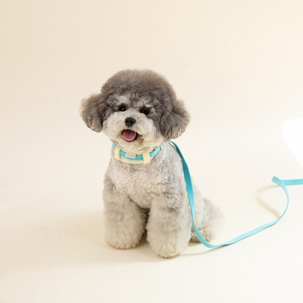

개편한 세상

푸들 ( Poodle )
역사
푸들은 독일에서 기원한 견종이지만, 현재 우리가 알고 있는 푸들의 모습과 특성은 프랑스에서 완성되었습니다 . 초기에는 주로 물에서 사냥을 돕기 위한 수렵견으로 사용되었습니다.
특징
푸들의 털은 곱슬곱슬하며 지속적으로 자라는 특성을 가지고 있어, 일반적인 털갈이로 인한 털빠짐이 거 의 없고 푸들은 매우 활동적이고 에너지가 넘치는 견종입니다.
성격
푸들은 새로운 명령과 트릭을 배우는 데 뛰어난 능력을 가지고 있고 푸들은 훈련에 대한 반응이 매우 좋습 니다. 이들은 명령을 빠르게 배우며, 일관된 훈련을 통해 다양한 기술과 행동을 익힐 수 있습니다.
지능순위
푸들은 지능 순위에서 두 번째로 높은 위치를 차지하고 있습니다. 이는 미국의 심리학자 스탠리 코렌 (Stanley Coren)의 연구에 기반한 결과입니다.
다른 견종에 대해서도 확인해볼까요?
견종백과 : 푸들